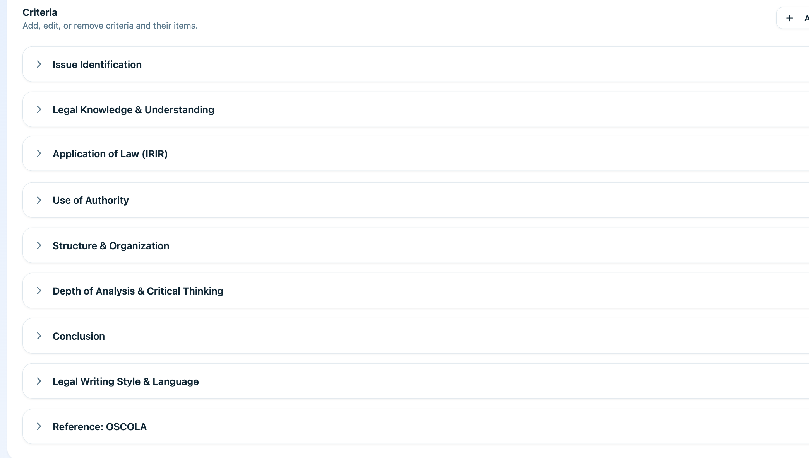
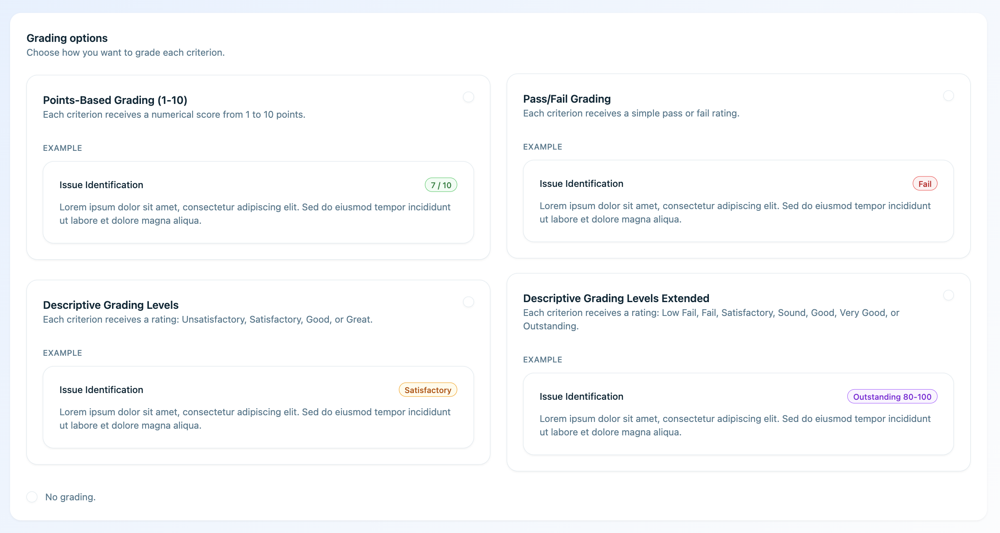

Voorbeeldcijfers en voorbeeldstappen
De huidige situatie
Een docent is nu 65 minuten bezig met één opdracht
Het meeste van die tijd gaat naar lezen en feedback schrijven. Met Eduface doet het platform de eerste beoordeling en controleert de docent die.
Nu
65 min per opdracht · 3 weken tot feedback
- 1Student levert in via het LMSautomatisch
- 2Docent leest en beoordeelt per criterium40 min
- 3Docent schrijft de feedback20 min
- 4Docent zet het cijfer in het LMS5 min
Met Eduface
15 min per opdracht · 1 week tot feedback
- 1Student levert in via het LMSautomatisch
- 2Eduface beoordeelt per criterium en schrijft feedback

automatisch
- 3Docent controleert en keurt goed

15 min
- 4Cijfer gaat terug naar het LMSautomatisch
Werk van de docentGaat automatisch
"In de toetsweken kijk ik 's avonds na. Feedback schrijven is dan het eerste dat korter wordt."